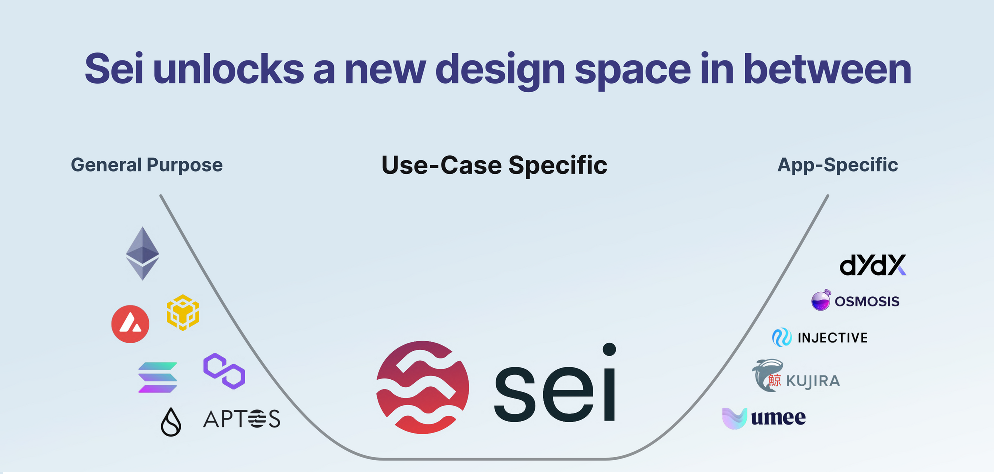
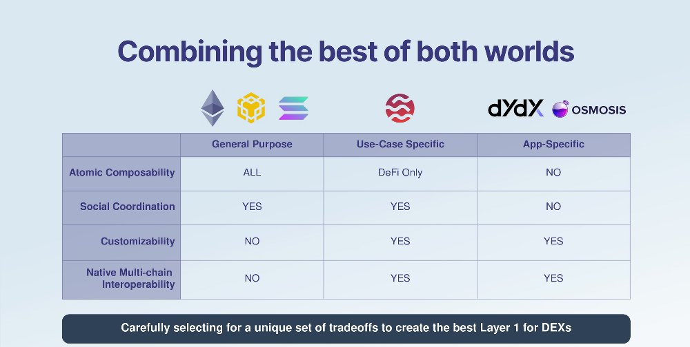

Information

Sei is the first Layer 1 specialized for trading, giving exchanges an unfair advantage.
1. optimizing every layer of the stack to give exchanges an unfair advantage
2. backed by Multicoin, Coinbase, Delphi, and a lot of large market makers
3. there are already 60+ teams building on top from Solana, Polkadot, NEAR, and Terra
By exploring the new design space between app chains and general purpose L1s, Sei has carefully selected a unique set of tradeoffs that make its layer 1 the optimal environment for trading.
Designed from the bottom up to scale, Sei unlocks new possibilities with optimizations including:
1. Built-in orderbook - solves the age-old orderbook scaling issue
2. Frontrunning protection - MEV is a major drawback of popular chains like Ethereum and Solana
3. Finality - Sei is the fastest chain to finality at ~600ms, 5x faster than Solana, Sui, and 2x faster than Aptos.
Designed from bottoms-up to scale with the needs of decentralized exchanges, Sei has made several optimizations to Layer 1 to give exchanges an unfair advantage:
1. Native Order Matching Engine - drives scalability of orderbook DEXs built on Sei
2. Frontrunning Protection - combats malicious frontrunning that is rampant in other ecosystems
3. Intelligent Block Propagation - improves latency and throughput
4. Sub-Second Settlement - Sei is the fastest chain to finality at ~600ms
The combination of these optimizations makes it possible for new types of financial products to emerge—everything ranging from live sports betting to complex options and futures.
Nearly all Layer 1 chains fall into a barbell distribution with many general-purpose chains on one side (Solana, Aptos, Ethereum) and app-specific chains on the other (dYdX, Osmosis).
There is a massive design space in the middle of that distribution and that is where Sei explores.
Sei unlocks an entirely new design space in between the two - not the general purpose nor app-specific but DEX-specific.

Use case-specific chains are able to combine the benefits of both, general purpose and app-specific chains.
- The biggest two advantages of general purpose chains tend to come from:
1. atomic composability - every app built on top can easily work with each other
2. social coordination - the fact that every project built on layer 1 is the same team (the feeling of everyone in the ecosystem being on 1 team is game-changing because they all work together to build the community, allowing it to grow 10 times faster than if they were fragmented)
- The biggest advantage of app-specific chains comes from:
1. customizability - if the chain is built around one single application, it can be customized for every aspect
2. native interoperability - if every chain is built with the same stack (ex. Cosmos SDK) chains can easily communicate i.e it’s very easy to be interoperable
- Sei has the opportunity to combine all these benefits - composability and coordination from general purpose and customizability and interoperability from more app-specific chains.
- Sei is carefully selecting a unique set of tradeoffs to create the best Layer 1 for DEXs.
